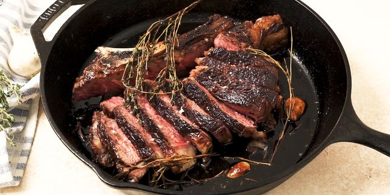

Ribeye

Test Ribeye -- A quick and flawless ribeye.
This is just some test text that is taking place as a summary of the ribeye. This is more test text emphasizing the importance of a part of the description.
Ingredients
- 1 (24-ounce) bone-in ribeye steak, 2-inch-thick, at room temperature
- Kosher salt and freshly ground black pepper, to taste
- 1 tablespoon canola oil
- 1 16 oz jar spaghetti sauce
- 1 clove garlic, minced
- 3 tablespoons unsalted butter
- 3 cloves garlic, smashed
- 3 sprigs fresh thyme
- 2 sprigs fresh rosemary
Steps
Step 1: Using paper towels, pat both sides of the steak dry; season generously with 1 1/4 teaspoons salt and 1/2 teaspoon pepper.
Step 2: Heat a medium cast iron skillet over medium high heat until very hot, about 1-2 minutes; add canola oil.
Step 3: Place the steak in the middle of the skillet and cook, turning every 2-3 minutes, until a dark crust has formed on both sides, about 12-14 minutes.
Step 4: Reduce heat to medium low. Push steak to one side of the skillet; add butter, garlic, thyme and rosemary to opposite side of the skillet, tilting the skillet towards the butter and cooking until butter is foaming, about 30 seconds to 1 minute.
Step 5: Working carefully, spoon butter over steak for 1-2 minutes, turning over once, until it reaches an internal temperature of 120 degrees F for medium rare, or until desired doneness. Let rest 15 minutes before slicing. -- Enjoy!